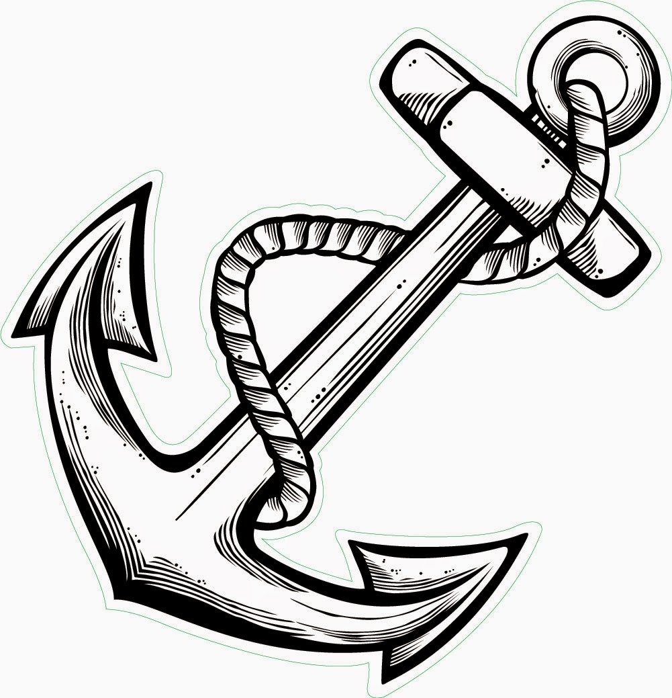

Prodi Nautika Kapal Penangkap Ikan
Giritontro, 16 Oktober 2018
Nautika Kapal Penangkap Ikan
Jurusan Nautika Kapal Penangkap Ikan adalah Prodi pertama yang ada sejak SMK Negeri 1 Giritontro pertama kali didirikan. Jurusan ini memiliki visi yaitu melatih taruna NKPI untuk menjadi perwira Pelayaran Besar (Samudra) bidang keahlian NKPI.Sudah ada 9 angkatan yang lulus pada tahun 2018. Pada tahun ajaran 2018/2019 Prodi ini dibuka untuk Taruni. Dulu Prodi NKPI pada angkatan pertama dan kedua terdapat taruni namun pada angkatan ke-3 hingga angkatan ke-11 dan baru tahun ini prodi tersebut kembali dibuka untuk Taruni.
Mata Pelajaran Khusus NKPI antara lain yaitu Stabilitas Kapal, Management Perkapalan, Pengoperasian alat Tangkap, Pelayaran Kapal Perikanan, Teknik Alat Penangkapan Ikan, Komunikasi Dinas Jaga Kapal Perikanan, Inggris Maritim, Dasar Keselamatan Laut, Simulasi Digital, Hukum Maritim, Bangunan Stabilitas Kapal Perikanan, dll.
Kunjungan Industri NKPI
Kunjungan Industri ini biasanya dilakukan waktu kelas X naik ke Kelas XI. untuk Prodi ini, Pada saat Kunjungan Industri dilakukan di Semarang, kegiatannya pemberian materi, praktek menjangka peta, praktek menggunakan GPS dan radar. Kunjungan Industri dilakukan selama 8-10 hari.
Prakerin (Praktek Kerja Industri)
Untuk prodi NKPI, Prakerin NKPI dilakukan dengan berlayar di kapal. Berlayar di kapal ini biasanya disebut dengan menyang. Prakerin dilakukan selama 6 bulan. Untuk angkatan pertama sampai angkatan ke-9 masih menggunakan kurikulum KTSP jadi pelaksanaan Prakerin dilakukan selama 6 bulan penuh. Namun dimulai dari angkatan ke-10 menggunakan kurtilas atau kurikulum 2013 pelaksanaan waktu 6 bulan itu dibagi menjadi 2 trip atau perjalanan jadi setiap trip dilaksanakan selama 3 bulan. Trip pertama dilaksanakan pada saat kelas 2 akhir dan trip kedua dilaksanakan pada saat awal masuk ke kelas 3. Prakerin dilaksanakan di Juana Pati, Benoa Bali, dan Pekalongan. Kurang lebih kegiatan yang dilakukan selama Prakerin, yaitu :
1. Tebar jaring kemudian angkat jaring ke atas kapal.
2. Memilih ikan yang layak jual selanjutnya ikan tersebut di freezer, setelah beku ikan tersebut di bungkus plastik.
3. Bongkar ikan untuk dilelang
Biasanya setelah Prakerin untuk jurusan NKPI diberi gaji atau upah minimal sekitar Rp. 1.000.000 atau bahkan bisa lebih, tergantung tempat dan hasil penangkapan ikan.
Kegiatan BST (Basic Safety Training)
Kegiatan BST (Basic Safety Training) bisa dilakukan pada saat kelas 1, 2 maupun 3. Namun, diwajibkan untuk kelas 12 karena masa aktifnya 3-5 tahun. BST biasanya dilakukan di PIP (Politeknik Ilmu Pelayaran) Semarang. Kegiatan yang dilakukan selama BST yaitu diberi Materi, Praktek Keselamatan Kerja, Praktek Membidai, Praktek Pemadaman APi dan MCU (Medical Check Up). Lamanya kegiatan ini sama dengan Kunjungan Industri yaitu berlangsung selama 8 sampai 10 hari.
Penyaluran Kerja
Setelah lulus SMK biasanya ditawarkan untuk bekerja bagi mereka yang tidak kuliah dan menginginkan langsung bekerja. Beberapa tempat penyaluran kerja untuk jurusan NKPI ini adalah sebagai berikut :
● PT. Pudji Utami Group (Jakarta)
● PT. SBN (Jakarta)
● PT. Budi Agung (Jakarta)
● PT. Prila Maritim Training Center (Denpasar, Bali)
● Jepang, Taiwan, Fiji, Korea, Lokal Indonesia